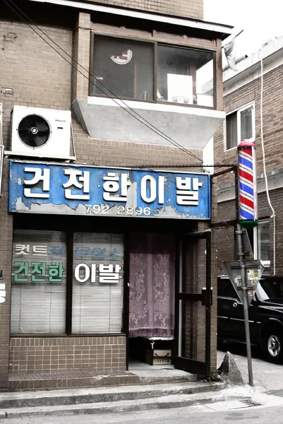
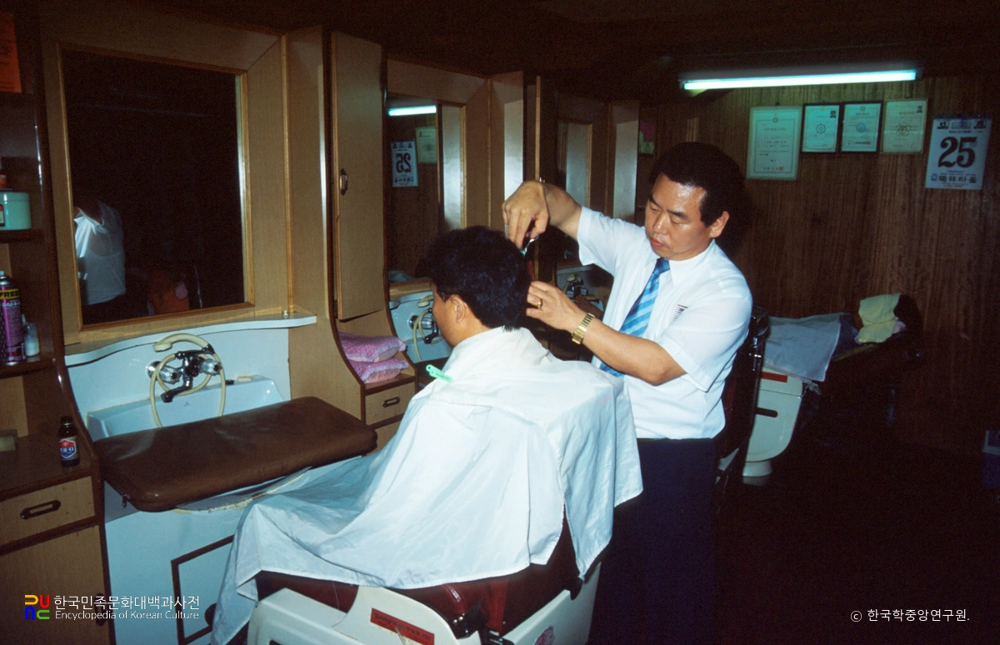
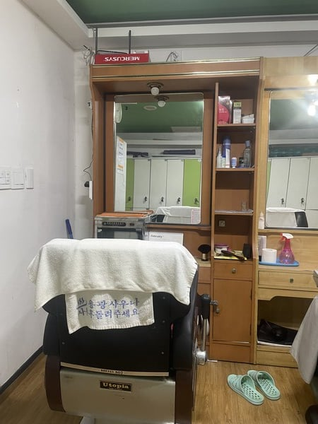
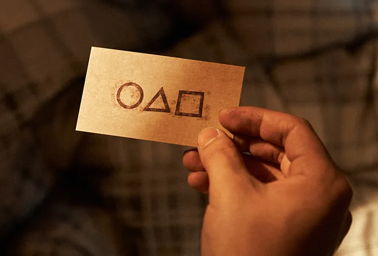

아버지가 단골이었던 공주의 한 목욕탕 이발소 아저씨의 이야기임....

예전에 이발사 아저씨가 금산쪽 목욕탕 이발소에서 일하고 계셨을때...
어느 한 손님이 경호원?으로 보이는 사람과 함께 이발을 했었음....

이발사 아저씨는 평소처럼 이발을 해줬는데...

그 손님은 '마음에 든다' 매우 만족하면서 명함을 하나 주고 갔었음....
문제는 그 손님의 정체가 좀 소름이었는데... 정체가 뭐였냐면...
JMS으로 유명한 정명석이었다고 함....
그 후 이발사 아저씨가 다른 곳으로 갈때까지 이발소 단골손님으로 자주 왔었음 ㄷㄷ...
왜 ㅇㄱㄸ가 아니었죠?